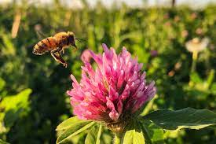

Diseases and Mutations
How does this happen?
Just like any other living thing, Clover is able to contract diseases and be brought into life with mutations. Often with a mutation, it’s a hereditary gene, passed all throughout the plant. Mutations hardly do any long lasting harm. Diseases are a bit harsher. If one plant has a form of pestilence that may be able to spread through roots, soil, leaves, or pollen. They can become sick from bacteria, viruses, insects, parasites, or even just a lack of an element of survival.
